CS 2150 Roadmap
Data Representation | Program Representation | |||||
| string int x[3] char x 0x9cd0f0ad 01101011 |
Objects Arrays Primitive types Addresses bits |
Java code C++ code C code x86 code IBCM hexadecimal |
High-level language Low-level language Assembly language Machine code |
|||
Complex Relationships: Phylogenetic Tree
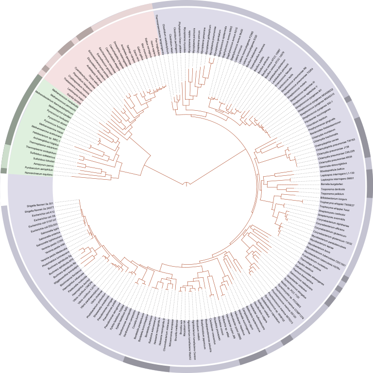{kind=link}
Complex Relationships: Language Tree
{kind=link}

| 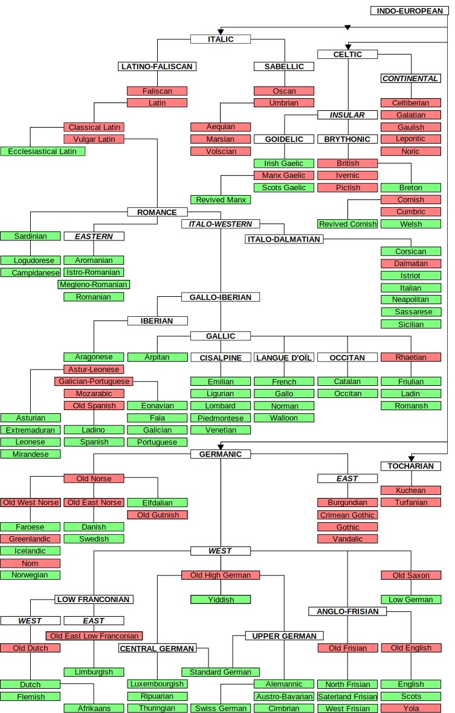 |
Tree Terms
|
Other Examples of Trees
| 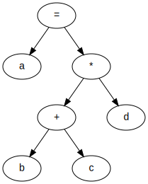 |
First child/next sibling
|
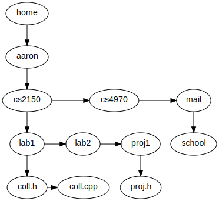 |
Binary Trees
|
All nodes have at most 2 children |
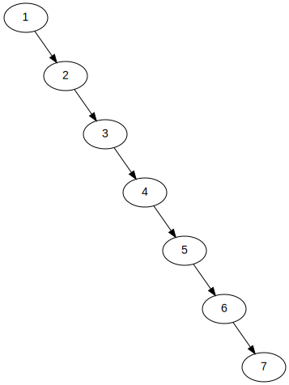 |
Binary Trees: diagram details
|
In reality, any child not shown is really a |
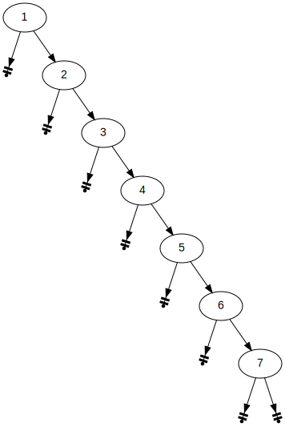 |
BST: insert
Do a find, and when we reach a NULL pointer, create a new node there
(no external source code)
void BST::insert(int x, BinaryNode * & curNode) {
if (curNode==NULL)
curNode = new BinaryNode(x,NULL,NULL);
else if (x < curNode->element)
insert(x, curNode->left);
else if (x > curNode->element)
insert(x, curNode->right);
else
; // duplicate... do nothing
}
BST: remove: no children
- Just remove the node (reclaiming memory), adjusting the parent pointer to
NULL- In this case, 9's left child link is changed to
NULL
- In this case, 9's left child link is changed to
| 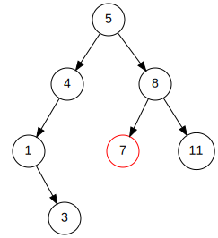 | → | 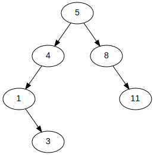 |
BST: remove: one child
- Adjust pointer of parent to point at child, and reclaim memory
- In this case, 4's left pointer is changed to point to 3
| 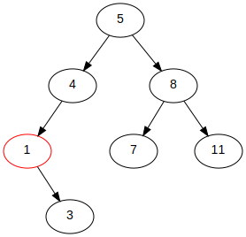 | → | 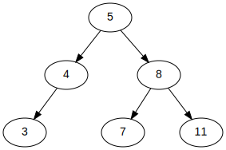 |
BST: remove: two children
- Replace node with successor, then remove successor from tree
- This requires running
findMin()on the right sub-tree, and then removing that element - In this case, 5 is replaced by 7 (and the node that had 7 is removed)
- This requires running
| 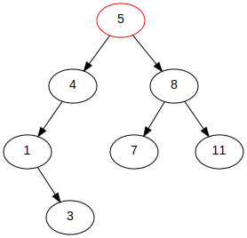 | → | 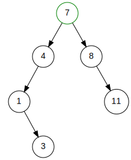 |
BST Height
|
AVL single right rotation
| 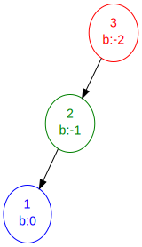 | → | 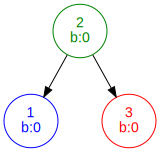 |
- The node just inserted was node 1 (blue)
- The lowest node, immediately after the insert, with an imbalance is node 3 (red)
- Because node 1 is in the "left subtree of the left child" of node 3, this means we need to perform a single right rotation
AVL single left rotation
| 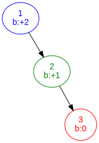 | → |
- The node just inserted was node 3 (red)
- The lowest node, immediately after the insert, with an imbalance is node 1 (blue)
- Because node 3 is in the "right subtree of the right child" of node 1, this means we need to perform a single left rotation
A side-effect of tree rotations
| → |
- This is the single right rotation
- Note that at least one node moves "up" (depth decreases)
- In this case, nodes 1 and 2 both move up
- And at least one node moves "down" (depth increases)
- In this case, node 3 moves down
- Similarly for a left rotation
AVL single right rotation: before & after
| 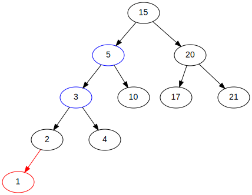 | → | 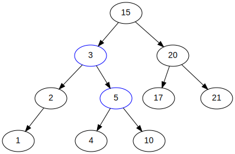 |
- Node 1 (red) is what is being inserted
- The lowest node with an imbalance is node 5 (balance: -2)
- Because the insert was in 5's "left subtree of the left child", we perform a single right rotation on 5 (and its left child, 3)
AVL single right rotation: before & after
| → |
- From the previous slide, we know we perform a single right rotation on 5 (and its left child, 3)
- Thus, the two blue nodes are the 'pivots' of the rotation
- Note that node 4 changes parents (from 3's right to 5's left)
AVL single right rotation: general case
| 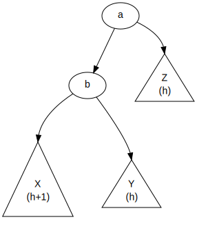 | → | 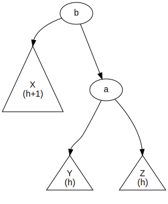 |
\( X < b < Y < a < Z \)
The insert is into sub-tree X, increasing its height to h+1
Notice how sub-tree Y changes parent
Cases 2 & 3: attempt a single rotation
| 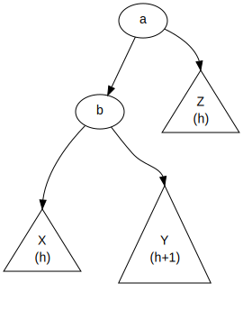 | → |  |
\( X < b < Y < a < Z \)
The insert is into sub-tree Y, increasing its height to h+1
Failure! b's left subtree has height h+1; right is h+3
Double rotation
|
 |
| |
Double rotation, step 1
| 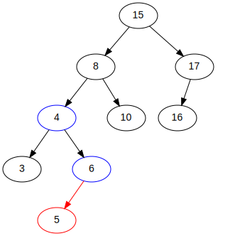 | → | 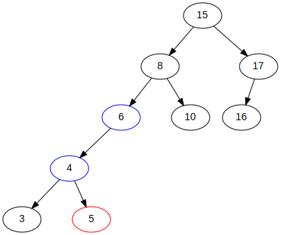 |
This is the single left rotation on the "child". The red node is what was inserted; the blue nodes are the 'pivots' of this single left rotation.
Double rotation, step 2
| 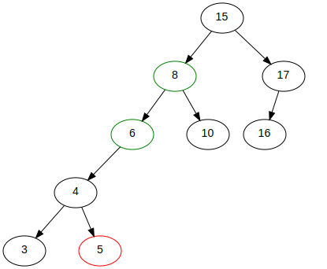 | → | 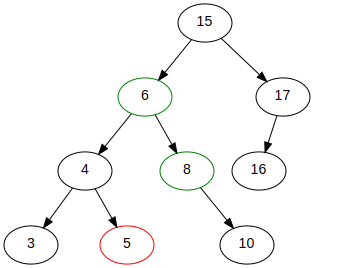 |
This is the single right rotation on the "parent". The red node is what was inserted; the green nodes are the 'pivots' of this single right rotation.
AVL double rotation: before & after
|
→ | 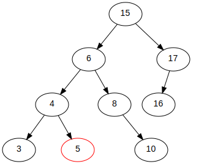 |
The red node is what was inserted
AVL double rotation: general case
| 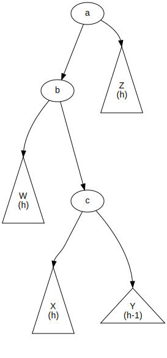 |
|
Algorithmic determination of rotation
| 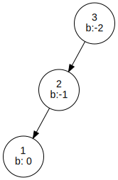 | 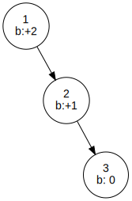 | 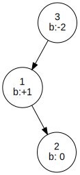 | 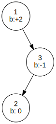 |
| left-left case | right-right case | left-right case | right-left case |
- Given the lowest unbalanced node, and the child in the direction of the insert, compare the balance factors
- -2/+1 means a double left-right, +2/+1 means a singe left, etc.
All the tree rotations
{kind=link}